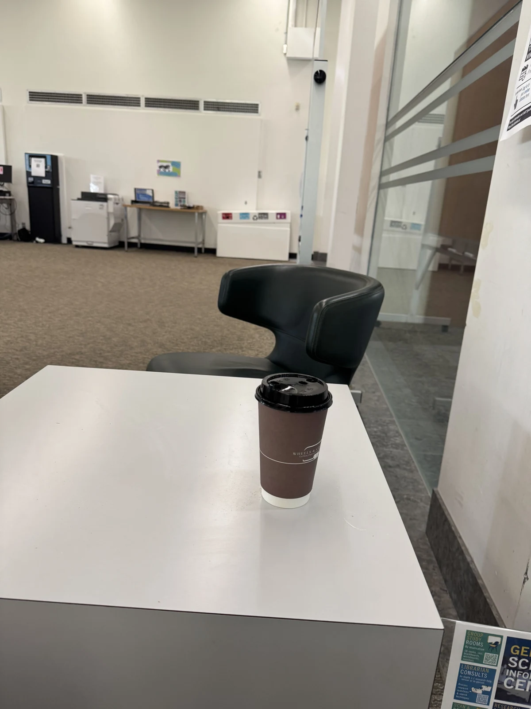
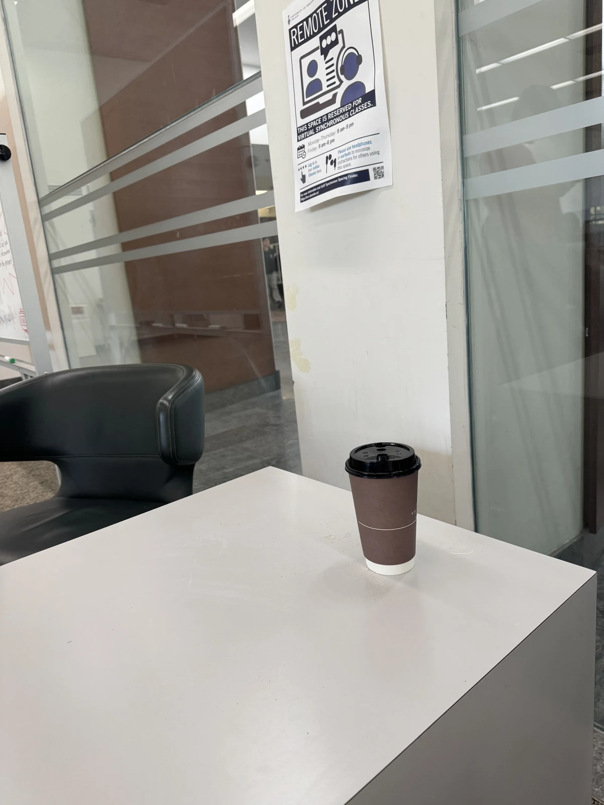
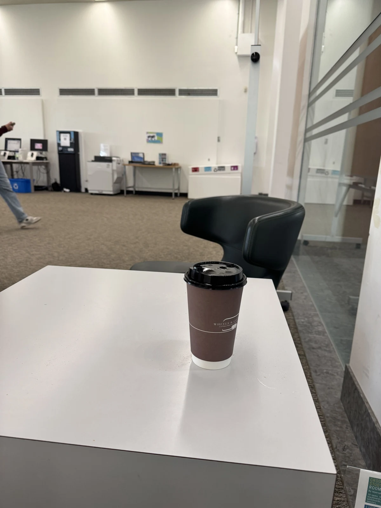
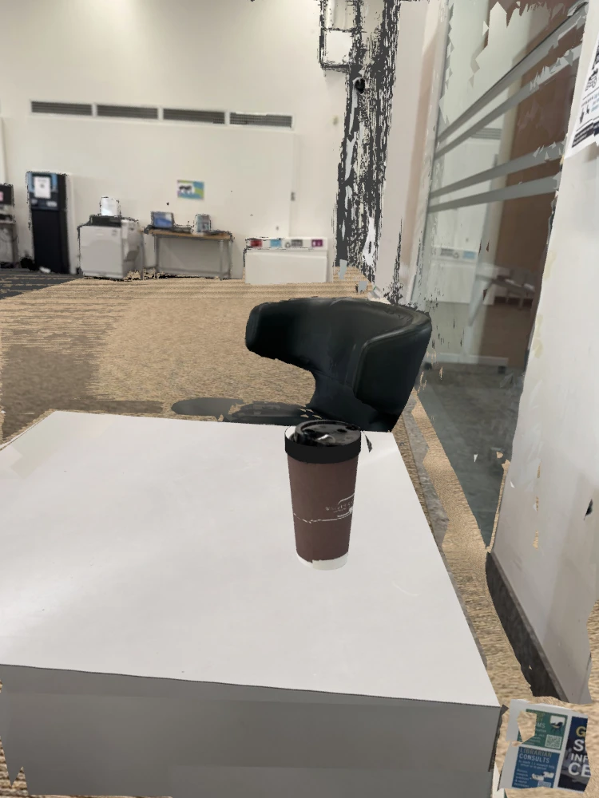
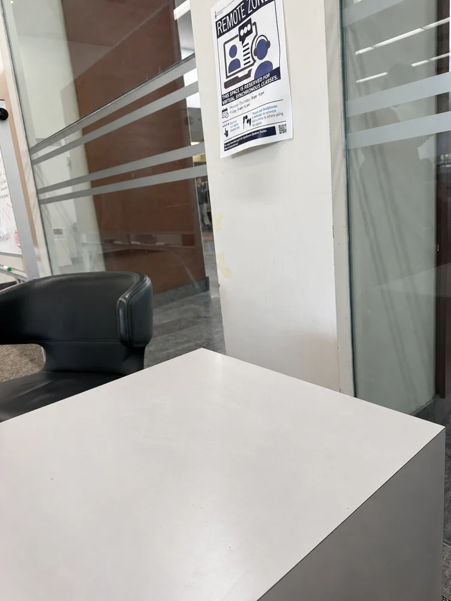
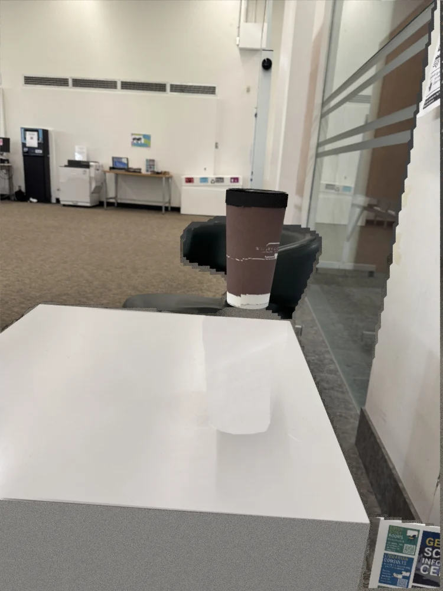

Watch
Collect egocentric video, actions and available depth or motion signals. Learn a baseline with Diffusion Policy or another imitation learner.
Egocentric learning · Real to sim to real
Learn the task from a person. Reconstruct the place.
Rehearse the difficult interactions in simulation.



Three real photographs. One starting point. Early reconstruction study · October 2026
The research direction
Human demonstrations give a robot a useful starting policy. Rehearse aims to turn the same egocentric observations into an interactive environment where that policy can improve before returning to the real scene.
Collect egocentric video, actions and available depth or motion signals. Learn a baseline with Diffusion Policy or another imitation learner.
Recover cameras and scene geometry. Separate movable objects from the room. Preserve observed appearance and mark inferred surfaces.
Fine-tune the policy in MuJoCo or mjlab, focusing on grasping, contact, dexterity and recovery.
Evaluate the improved policy on the robot. Use new observations to update changed objects and repeat the loop.
Proposed pipeline. Policy training, robot deployment and live scene updates are research goals; the example below tests scene construction.
First scene
A small scene with a useful test: the cup must leave the table. Its appearance, its motion and the surface underneath it need to remain consistent.
Loading the scene…
Drag to orbit. Scroll to zoom. Camera poses are estimated from manually marked table and cup features. “Lift cup” previews a changed object pose; it is not a grasp simulation.
The MuJoCo prototype gives the coffee a free joint, a tapered collision body and separate visual geometry. The tabletop remains when the object moves.
Colored frusta show the fitted capture positions. Scale currently assumes a 17 cm cup; a real measurement is needed before robot calibration.
Look closely
Reproducing a familiar view is only the first check. The side view reveals where the current background geometry breaks down.

These views use the input photos during reconstruction. They are reconstruction-fit checks, not held-out novel-view results. Gaps, texture stretching and background misalignment remain visible.
Fill what is hidden
A generative clean plate supplies the small patch hidden by the cup. Observed and generated surfaces remain distinguishable in the source assets.


Generated appearance does not establish hidden geometry, friction or material properties. Cup mass and contact parameters are provisional.
An honest benchmark
Does the geometry agree across views? Can objects move? Do new viewpoints hold up? Does a policy trained here improve on the robot?
SIFT matching, essential matrices, PnP and bundle adjustment connect the two front views. The side-view estimate degenerates and is rejected. Dense stereo is a separate diagnostic.
A cached DPT model estimates relative depth. Table constraints anchor it to an assumed scale. Background geometry remains uncertain; depth ordering is not ground truth.
Shared table and cup geometry, estimated camera poses and depth-based background meshes form the current hybrid prototype. Cross-view artifacts remain.
A small untrained Gaussian point-rendering baseline is included in the local diagnostics. It is not trained 3DGS. The gsplat download was blocked, so no trained-splat result is claimed.
Image generation removes the cup from one view and fills the hidden tabletop. Geometry and physical properties still need independent validation.
Visual or visual-inertial SLAM, learned multi-view reconstruction and object-level updates need a longer capture, appropriate models and a controlled comparison.
The next experiment
The end goal is a scene that helps a robot acquire a skill.
“Offline” here means training away from the physical robot using simulator rollouts. This differs from dataset-only offline reinforcement learning.